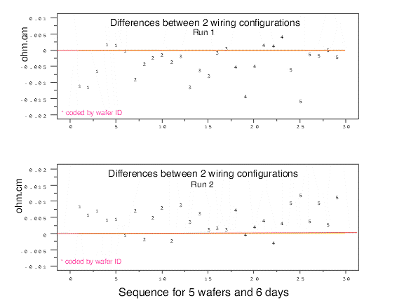

|
2. Measurement Process Characterization 2.5. Uncertainty analysis 2.5.3. Type A evaluations 2.5.3.3. Type A evaluations of bias 2.5.3.3.3. Bias with sparse data |
|
| Strategy for dealing with limited data | The purpose of this discussion is to outline methods for dealing with biases that may be real but which cannot be estimated reliably because of the sparsity of the data. For example, a test between two, of many possible, configurations of the measurement process cannot produce a reliable enough estimate of bias to permit a correction, but it can reveal problems with the measurement process. The strategy for a significant bias is to apply a 'zero' correction. The type A uncertainty component is the standard deviation of the correction, and the calculation depends on whether the bias is The analyses in this section can be produced using both Dataplot code and R code. |
| Example of differences among wiring settings | An example is given of a study of wiring settings for a single gauge. The gauge, a 4-point probe for measuring resistivity of silicon wafers, can be wired in several ways. Because it was not possible to test all wiring configurations during the gauge study, measurements were made in only two configurations as a way of identifying possible problems. |
| Data on wiring configurations | Measurements were made on six wafers over six days (except for 5 measurements on wafer 39) with probe #2062 wired in two configurations. This sequence of measurements was repeated after about a month resulting in two runs. A database of differences between measurements in the two configurations on the same day are analyzed for significance. |
| Plot the differences between the two wiring configurations |
A plot of the differences between the two configurations
shows that the differences for run 1 are, for the most part,
less than zero, and the differences for run 2 are greater than zero.
 |